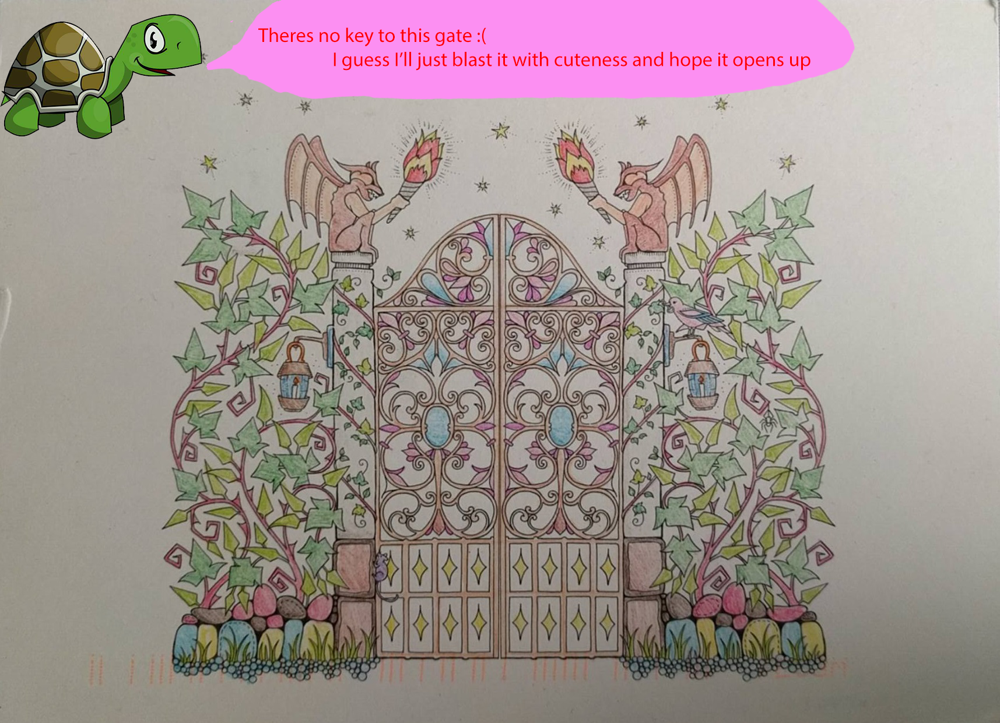

Hey Babe,
So Valentine's is tomorrow and I knooww you wanna do this whole thing with the girls there but just for the
sake of it I still wanted to do this.
I know you love V-Day and all (remember when I thought it was related to D-day :P) and I'm sorry I couldnt
be there with you for our first one :(
But you will be here in under a month so I was kinda hoping that we could have our own little
Valentine's Day for when you are back :)
So .... *That Awkward Moment* ...
Will ..
You ...
Be .. My ..
Girl- *cough* ahem ahem *cough*
Valentine ?
Your thingy,
Shrey ♥
P.S.:
